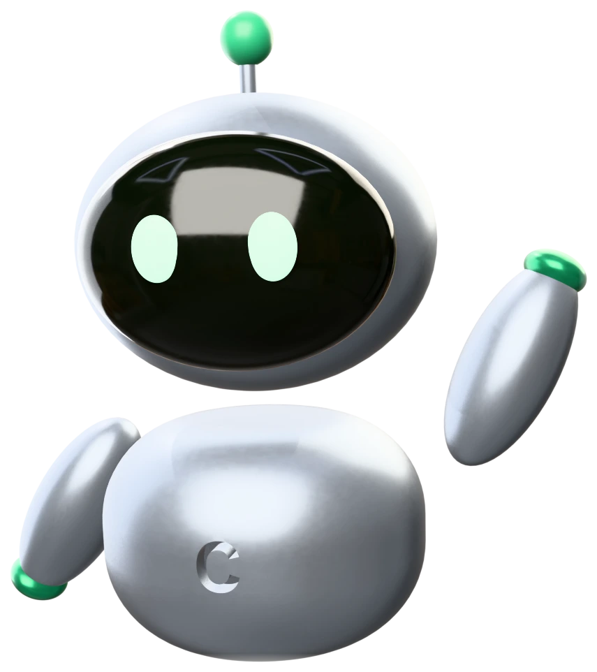
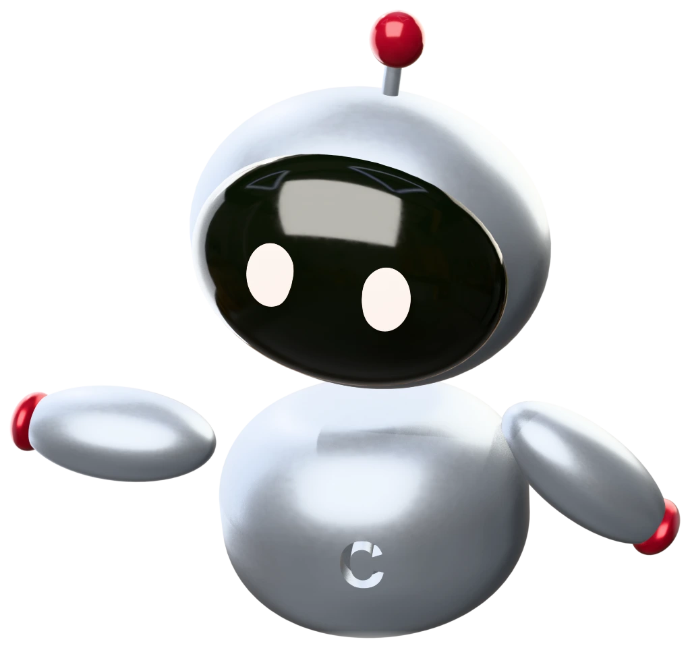
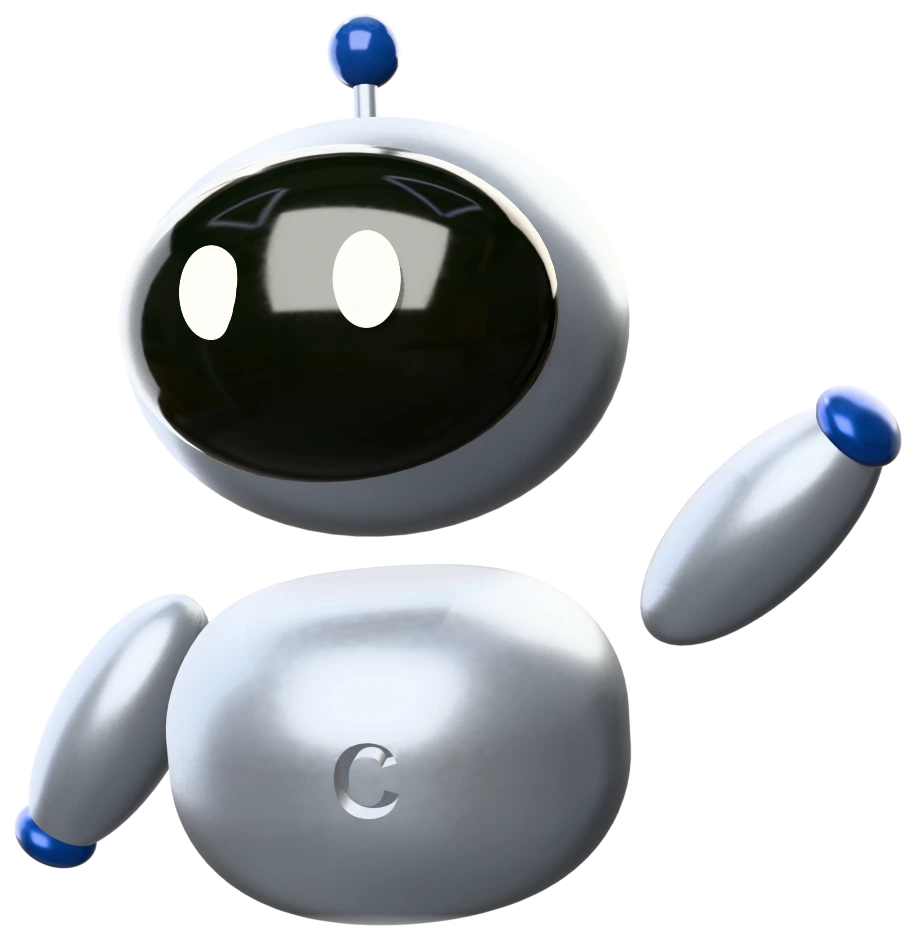
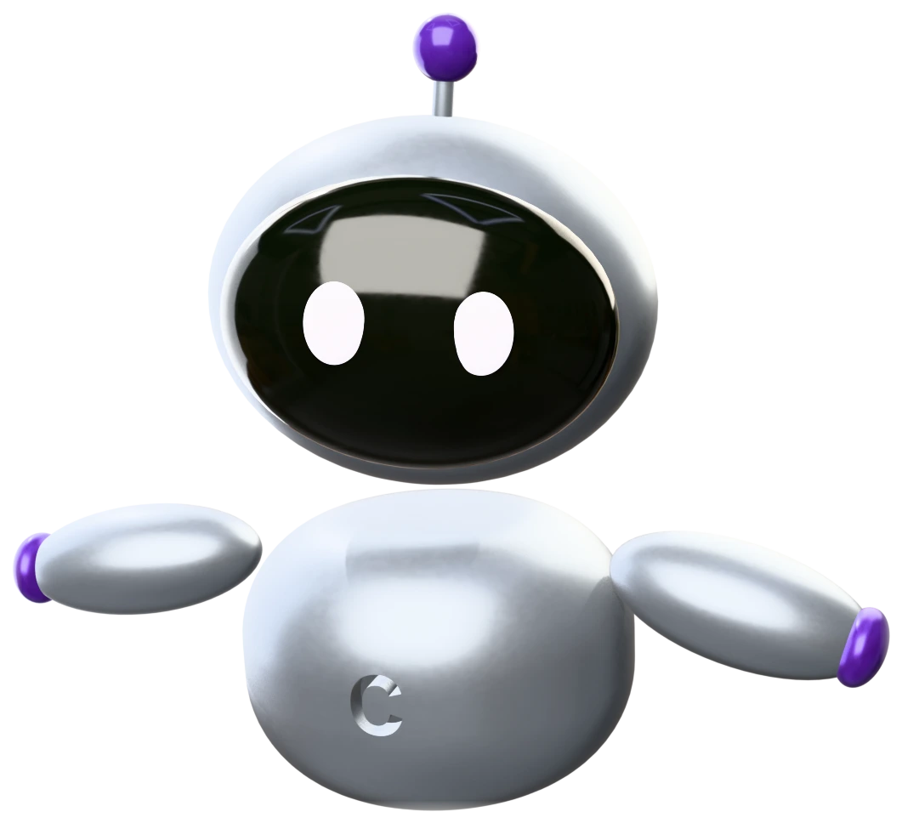
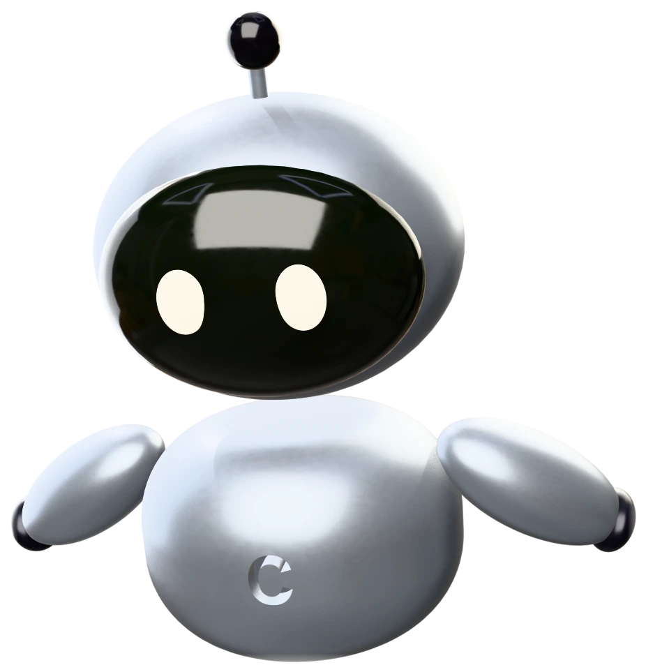

Instruments for compliance decisions, and one method behind all of them: each tier is measured on sealed records, the frontier is read with its interval, and the whole sweep reruns on your own machine. Nothing of yours goes up.




